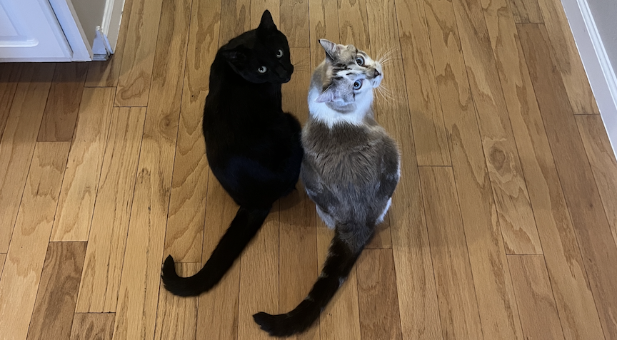

Nikhomkhai, P. (n/a). Data infrastructure server cables

Pexels. Retrieved from
https://www.pexels.com/photo/modern-building-in-austria-19166565/
Pexels. (2021). Happy business celebration
.
Retrieved from https://www.pexels.com/video/a-happy-man-and-woman-celebrating-success-8631872/
Aisling, I. (n/a). Empty moon
.
Uppbeat.
Retrieved
from https://uppbeat.io/track/ian-aisling/empty-moon
